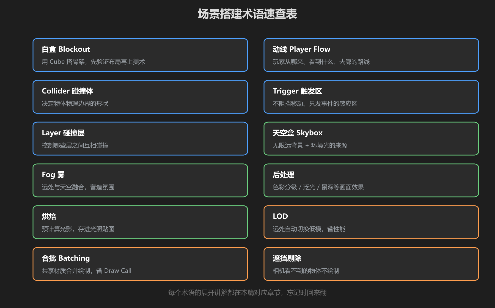
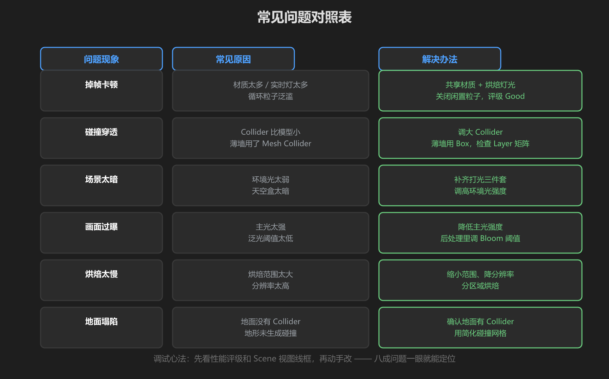
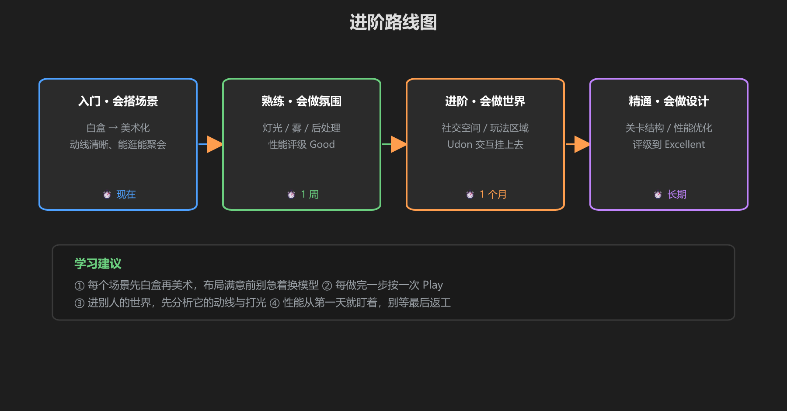

第 6 篇：速查表 & 常见问题
做世界时随身带这一篇。术语记不住翻上面，出问题查中间，想进阶看下面。
1. 术语速查（12 个）

图：12 个核心术语一句话解释
| 术语 | 一句话 | 出处 |
|---|---|---|
| 白盒 Blockout | 用 Cube 搭骨架，先验证布局 | 第 1 篇 |
| 动线 Player Flow | 玩家从哪来、看到什么、去哪 | 第 1 篇 |
| Collider | 物体物理边界的形状 | 第 2 篇 |
| Trigger | 不阻挡移动、只发事件的感应区 | 第 2 篇 |
| Layer | 碰撞矩阵控制谁和谁相撞 | 第 2 篇 |
| 天空盒 | 无限远背景 + 环境光来源 | 第 3 篇 |
| Fog 雾 | 远处与天空融合，营造氛围 | 第 3 篇 |
| 后处理 | 色彩分级 / 泛光 / 景深等全屏效果 | 第 3 篇 |
| 烘焙 | 预计算光影存进光照贴图 | 第 3 篇 |
| LOD | 远处自动换低模省性能 | 第 4 篇 |
| 合批 Batching | 共享材质合并绘制，省 Draw Call | 第 4 篇 |
| 遮挡剔除 | 相机看不到的物体不绘制 | 第 4 篇 |
2. 常见问题对照表

图：问题现象 → 常见原因 → 解决办法
| 问题现象 | 常见原因 | 解决办法 |
|---|---|---|
| 掉帧卡顿 | 材质太多、实时灯太多、循环粒子泛滥 | 共享材质 + 烘焙灯光 + 关闭闲置粒子，评级到 Good |
| 碰撞穿透 | Collider 比模型小，薄墙用了 Mesh Collider | 调大 Collider，薄墙用 Box，检查 Layer 矩阵 |
| 场景太暗 | 环境光太弱，天空盒太暗 | 补齐打光三件套，调高环境光强度 |
| 画面过曝 | 主光太强，泛光阈值太低 | 降低主光强度，后处理里调 Bloom 阈值 |
| 烘焙太慢 | 烘焙范围太大、分辨率太高 | 缩小范围、降分辨率，分区域烘焙 |
| 地面塌陷 | 地面没有 Collider，地形未生成碰撞 | 确认地面有 Collider，用简化碰撞网格 |
调试心法：先看性能评级和 Scene 视图线框，再动手改 —— 八成问题一眼就能定位。剩下的看《渲染教程》和《游戏机制教程》找答案。
3. 进阶路线图

图：从会搭场景到会做世界设计
- 入门：会搭能逛的场景（白盒 → 美术化，动线清晰）
- 熟练：会做氛围与性能（灯光/烘焙/合批，评级 Good+）
- 进阶：会做完整世界（社交空间、玩法区域、Udon 交互）
- 精通：系统级设计（关卡结构、性能压到 Excellent、团队协作规范）
学前检查清单
- 能说出 12 个术语的含义
- 遇到「暗/穿透/掉帧」能对号入座找到解法
- 知道下一步该学什么（渲染 / 机制 / 网络）